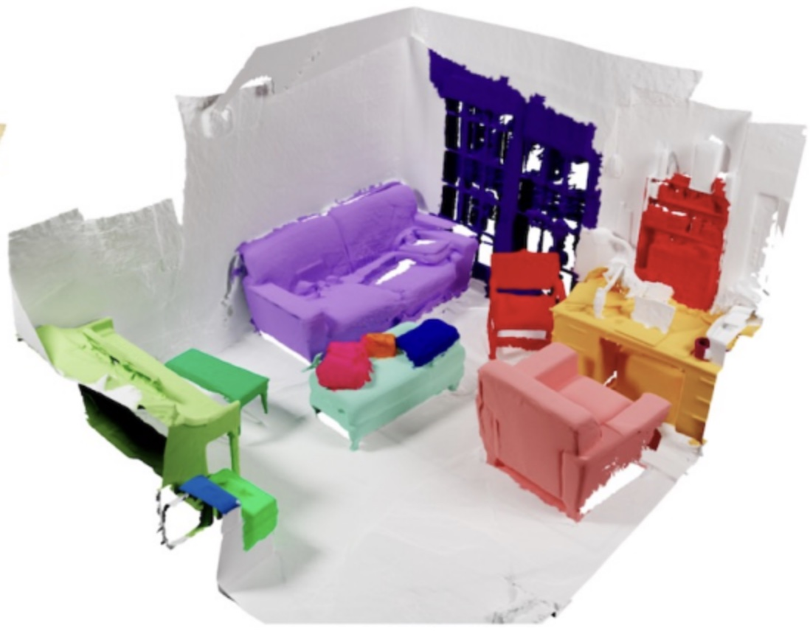
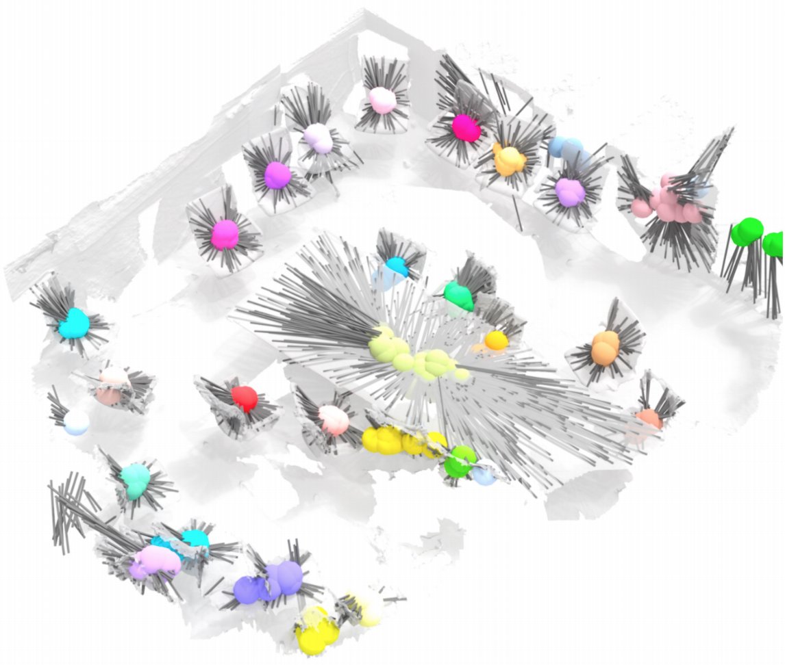
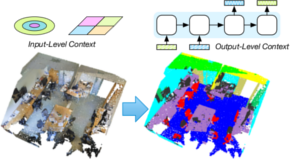

Francis Engelmann
I am a postdoctoral fellow at the AI Center of ETH Zurich working with Prof. Dr. Siyu Tang and Prof. Dr. Otmar Hilliges. Before joining ETH Zurich, I finished my Ph.D. in Computer Vision, Machine Learning and 3D Scene Understanding in the Computer Vision Group of Prof. Dr. Bastian Leibe at RWTH Aachen University and spent some time at Google X in Munich with Martin Bokeloh and Google Research Zurich with Kostas Rematas, as well as Apple in California.
News
- July 2022 Our paper Box2Mask on weakly supervised 3D instance segmentation using bounding box annotations is accepted as oral (2.7%) to ECCV'22.
- June 2022 Gave an invited talk on the future of 3D segmentation at the CVPR 2022 ScanNet workshop.
- June 2022 Our winning entry on 2D floorplan reconstruction from large-scale point clouds was presented at CV4AEC with Ekin Celikkan and Theodora Kontogianni.
- June 2022 Our model Mix3D won first place on the ScanNet 3D Semantic Segmentaion challenge with Alexey Nekrasov and Jonas Schult.
Research
-

Mask3D: Rethinking 3D Instance Segmentation using Transformers arXiv, 2022. Paper BibTeX Project
@inproceedings{Schult2022mask3d, title = {Rethinking 3D Instance Segmentation using Transformers}, author = {Jonas Schult, Francis Engelmann, Alexander Hermans, Or Litany, Siyu Tang, Bastian Leibe}, booktitle = {ArXiv Preprint}, year = {2022} } -

Box2Mask: Weakly Supervised 3D Semantic Instance Segmentation Using Bounding Boxes European Conference on Computer Vision (ECCV), 2022. Oral Presentation Paper BibTeX Project
@inproceedings{Chibane2022box2mask, title = {Box2Mask: Weakly Supervised 3D Semantic Instance Segmentation Using Bounding Boxes}, author = {Chibane, Julian and Engelmann, Francis and Tran, Tuan Anh and Pons-Moll, Gerard}, booktitle = {{European Conference on Computer Vision (ECCV)}}, year = {2022} } -

Mix3D: Out-of-Context Data Augmentation for 3D Scenes International Conference on 3D Vision (3DV), 2021. Oral Presentation, 1st Place ScanNet Challenge Paper BibTeX Demo Project Code
@inproceedings{Nekrasov213DV, title = {{Mix3D: Out-of-Context Data Augmentation for 3D Scenes}}, author = {Nekrasov, Alexey and Schult, Jonas and Litany, Or and Leibe, Bastian and Engelmann, Francis}, booktitle = {{International Conference on 3D Vision (3DV)}}, year = {2021} } -

From Points to Multi-Object 3D Reconstruction Proc. Computer Vision and Pattern Recognition (CVPR), 2021. Paper Poster BibTeX Project Code
@inproceedings{Engelmann21CVPR, title = {{From Points to Multi-Object 3D Reconstruction}}, author = {Engelmann, Francis and Rematas, Konstantinos and Leibe, Bastian and Ferrari, Vittorio}, booktitle = {{IEEE Conference on Computer Vision and Pattern Recognition (CVPR)}}, year = {2021} } -

3D-MPA: Multi Proposal Aggregation for 3D Semantic Instance Segmentation Proc. Computer Vision and Pattern Recognition (CVPR), 2020. Paper BibTeX Project Video
@inproceedings{Engelmann20CVPR, title = {{3D-MPA: Multi Proposal Aggregation for 3D Semantic Instance Segmentation}}, author = {Engelmann, Francis and Bokeloh, Martin and Fathi, Alireza and Leibe, Bastian and Nie{\ss}ner, Matthias}, booktitle = {{IEEE Conference on Computer Vision and Pattern Recognition (CVPR)}}, year = {2020} } -

DualConvMesh-Net: Joint Geodesic and Euclidean Convolutions on 3D Meshes Proc. Computer Vision and Pattern Recognition (CVPR), 2020.
Oral Presentation Paper BibTeX Project Code@inproceedings{Schult20CVPR, title = {{DualConvMesh-Net: Joint Geodesic and Euclidean Convolutions on 3D Meshes}}, author = {Jonas Schult and Francis Engelmann and Theodora Kontogianni and Bastian Leibe}, booktitle = {{IEEE Conference on Computer Vision and Pattern Recognition (CVPR)}}, year = {2020} } -

Dilated Point Convolutions: On the Receptive Field Size of Point Convolutions on 3D Point Clouds Proc. International Conference on Robotics and Automation (ICRA), 2020. Paper BibTeX Poster Project Video
@inproceedings{Engelmann20ICRA, author = {Engelmann, Francis and Kontogianni, Theodora and Leibe, Bastian}, title = {{Dilated Point Convolutions: On the Receptive Field Size of Point Convolutions on 3D Point Clouds}}, booktitle = {{International Conference on Robotics and Automation (ICRA)}}, year = {2020} } -

3D-BEVIS: Bird’s-Eye-View Instance Segmentation Proc. German Conference on Pattern and Recognition (GCPR), 2019. YRF DAGM Best Master's Thesis Award 2019
Paper BibTeX@inproceedings{ElichGCPR19, title = {{3D-BEVIS: Birds-Eye-View Instance Segmentation}}, author = {Elich, Cathrin and Engelmann, Francis and Schult, Jonas and Kontogianni, Theodora and Leibe, Bastian}, booktitle = {{German Conference on Pattern Recognition (GCPR)}}, year = {2019} } -

Know What Your Neighbors Do: 3D Semantic Segmentation of Point Clouds Proc. European Conference on Computer Vision Workshops (ECCVW), 2018. Paper BibTeX
@inproceedings{Engelmann18ECCVW, author = {Francis Engelmann and Theodora Kontogianni and Jonas Schult and Bastian Leibe}, title = {Know What Your Neighbors Do: 3D Semantic Segmentation of Point Clouds}, booktitle = {{European Conference on Computer Vision Workshops (ECCVW)}}, year = {2018} } -

Exploring Spatial Context for 3D Semantic Segmentation of Point Clouds Proc. Internationcal Conference on Computer Vision Workshops (ICCVW), 2017.
Oral Presentation Paper BibTeX Poster Project Video Code@inproceedings{3dsemseg_ICCVW17, author = {Francis Engelmann and Theodora Kontogianni and Alexander Hermans and Bastian Leibe}, title = {Exploring Spatial Context for 3D Semantic Segmentation of Point Clouds}, booktitle = {{International Conference on Computer Vision Workshops (ICCVW)}, year = {2017} } -

Keyframe-Based Visual-Inertial Online SLAM with Relocalization Proc. International Conference on Intelligent Robots and Systems (IROS), 2017. Paper BibTeX
@inproceedings{Kasyanov17IROS, title = {{Keyframe-Based Visual-Inertial Online SLAM with Relocalization}}, author = {Anton Kasyanov and Francis Engelmann and J\"org St\"uckler and Bastian Leibe}, booktitle = {{International Conference on Intelligent Robots and Systems (IROS)}}, year = {2017} } -

SAMP: Shape and Motion Priors for 4D Vehicle Reconstruction Proc. Winter Conference on Applications of Computer Vision (WACV), 2017. Paper BibTeX Poster Supplementary Material Project
@inproceedings{Engelmann17WACV, author = {Francis Engelmann and J{\"{o}}rg St{\"{u}}ckler and Bastian Leibe}, title = {{SAMP: Shape and Motion Priors for 4D Vehicle Reconstruction}}, booktitle = {{Winter Conference on Applications of Computer Vision (WACV)}}, year = {2017} } -

Joint Object Pose Estimation and Shape Reconstruction in Urban Street Scenes Using 3D Shape Priors Proc. German Conference on Pattern Recognition (GCPR), 2016.
Oral Presentation Paper BibTeX Supplementary Material Project Video Code@inproceedings{Engelmann16GCPR, title = {{Joint Object Pose Estimation and Shape Reconstruction in Urban Street Scenes Using 3D Shape Priors}}, author = {Francis Engelmann and J\"org St\"uckler and Bastian Leibe}, booktitle = {{German Conference on Pattern Recognition (GCPR)}}, year = {2016} }
Projects
Mix3D Online 3D Segmentation Segmentation Tool
LinkPyViz3D: A simple web-based visualizer for 3D point clouds and other primitives.
Code DocumentationVirtual KITTI 3D: Extension of the Virtual Kitti dataset including 3D cloud representations and refined semantic labels.
CodeGraph Convolutional Nets: Implementation of Kipf et al. graph convolutional networks.
CodeFast Voxel Traversal: Implementation of the Fast Voxel Traversal algorithm.
CodeSpectrum Analyzer: Some tools to visualize audio input using OpenAL and FFTW.
CodeMCMC-MH: Implementation of MCMC-MH and sudoku solver using MCMC.
Code